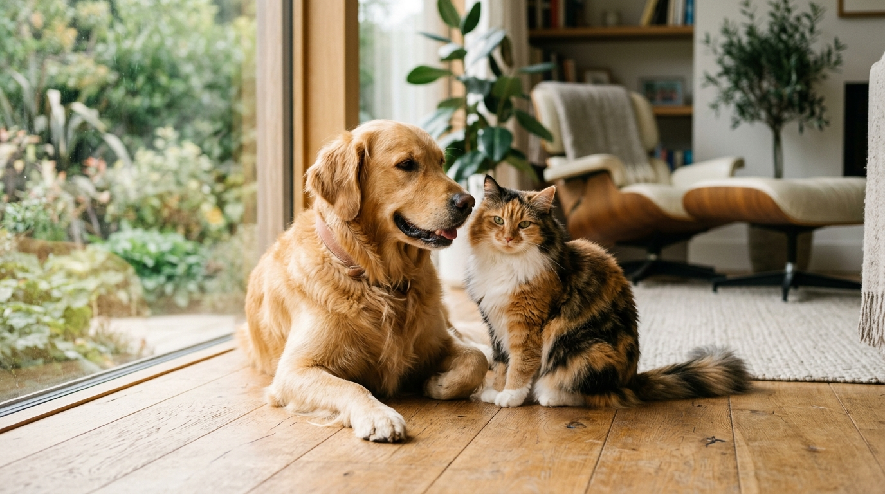
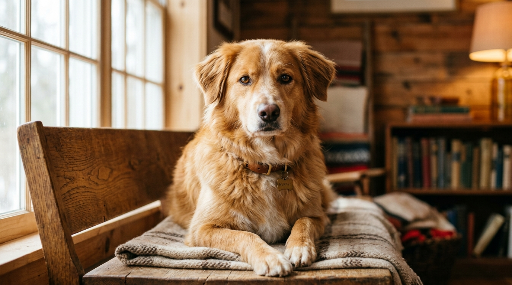
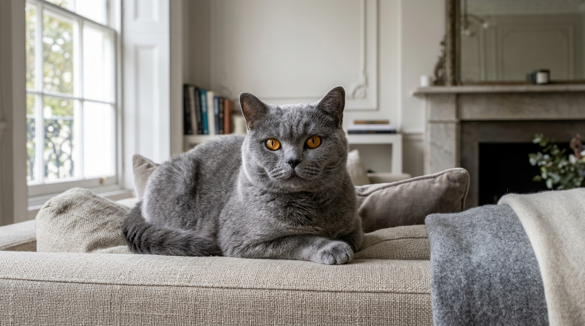

Two species. Two souls. One sacred covenant.
An unapologetically deep, veterinary-backed masterwork dedicated to understanding, honoring, and loving dogs and cats with world-class care.
The Canine Essence
Unconditional devotion, outdoor vitality, pack bonds, and dynamic cooperative intelligence. Built for companionship in motion.
Explore Canine Codex →The Feline Mystique
Quiet sovereignty, vertical territory, sensory precision, and profound earned trust. Built for serene sanctuary living.
Explore Feline Codex →The Unfiltered Truth
Honest pros and cons without romanticized fluff. 3 AM zoomies, vet emergency funds, separation anxiety, and life-changing joy.
View Truth Matrix →
The Science of Boundless Devotion
Dogs did not simply adapt to human society; they co-evolved over 30,000 years to read human facial micro-expressions, gaze into our eyes to trigger oxytocin synchrony, and share our daily rhythms.
- ✦ Olfactory Superpowers: Over 300 million scent receptors that experience time through scent decay.
- ✦ Cooperative Attachment: Secure emotional base theory mirroring parent-child developmental bonds.
- ✦ Daily Rhythm & Drive: Physical stamina paired with intellectual puzzle fulfillment.

The Sovereign Art of Feline Connection
A cat's affection is not given blindly; it is an intimate gift of mutual consent. Felines perceive their home as a continuous scent landscape where vertical hierarchy and predictable territory offer profound safety.
- ✦ Sensory Acuity: Whiskers calibrated to detect air currents and micro-vibrations without touch.
- ✦ Acoustic Healing: Purrs vibrating between 20–140 Hz shown to stimulate bone density and tissue repair.
- ✦ The Predatory Loop: Hunt → Catch → Kill → Eat → Groom → Sleep cycle vital for mental tranquility.